1. Overview
A software bill of materials (SBOM) lists what a piece of software is built from. Depotex reads every SBOM it holds, component by component, into one store, so the same questions can be asked of everything: a library published to a Maven repository with its CycloneDX file, a container image with a buildx attestation, or a deployed service whose SBOM CI uploads after each release.
- SBOMs stored with artifacts are read when the artifact is published or fetched: files by name (-cyclonedx.json, .spdx.json, bom.xml, …), in-toto SBOM attestations, Docker buildx attestations and OCI referrers. The version's Security tab shows them; the API lists their components. Every license tier.
- SBOMs Depotex makes from the package. Most packages are published without an SBOM, so Depotex makes one for Maven, npm, PyPI, Go, Cargo, NuGet and Composer versions. When the package ships a lockfile (npm-shrinkwrap.json, Cargo.lock, composer.lock), the SBOM lists the whole tree it pins. Otherwise it lists what the package's own description pins to one version: a Go module's go.mod (from Go 1.17 that is every module a build needs), a NuGet package's dependencies (NuGet installs the lowest version allowed), a Maven POM's dependencies with the versions its parent POMs and imported BOMs set, when those are in the same repository. In proxy repositories the package itself is listed too. Version ranges aren't resolved, so a package without a lockfile lists less than a build's own SBOM, and its coverage says so. They are named made with Depotex package metadata (or Depotex package lockfile) and need Pro: on Standard Depotex doesn't make them, and only the SBOMs that came with the package are shown. Applying a Pro or Enterprise license under Settings → Licensing fills them in, in the background, for the versions already stored.
- Container images Depotex reads. An image pushed or pulled without an SBOM (no docker buildx --sbom attestation, no SBOM pushed with ORAS or cosign) is read by Depotex itself with Syft: the operating system packages (Debian, Ubuntu, Alpine, RHEL family) and the libraries installed in it (Java, JavaScript, Python, Go and Rust binaries, Ruby, PHP, .NET), each at the version found. This runs in the background, one image at a time, shortly after the image arrives; the SBOM then appears on the tag's Security tab, named syft (Depotex image scan). Images that ship their own SBOM keep using it. Needs Pro.
- Applications are software that isn't stored in a repository. Register one in a space, then upload an SBOM for each of its versions. Enterprise.
- Formats: CycloneDX (JSON and XML, 1.2 to 1.6) and SPDX (JSON and tag-value, 2.2 and 2.3). Every component's purl, name, version, type, supplier, licenses and hashes are kept, and the relationships between components.
An SBOM is read like any other artifact content: within size, depth and time limits, never fetching anything from the network. For an artifact, content over a limit quarantines the version (see Browse); an uploaded application SBOM is simply refused with the reason. An artifact's SBOM that is safe to read but isn't valid SPDX or CycloneDX (broken JSON, another kind of document) doesn't quarantine anything: it is listed as Unreadable, with the reason, and no components.
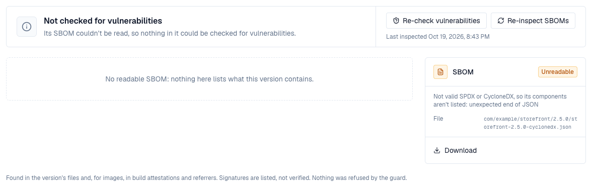
2. In the browser
- A version's Security tab opens with a summary: how many known vulnerabilities the version carries by severity (and how many are new since it was stored), its coverage score (or, when nothing could be checked, why), and, for repository administrators, when it was last inspected with Re-check vulnerabilities and Re-inspect SBOMs. Below it, one SBOM's Vulnerabilities, Components (with each component's supplier and any open vulnerabilities) and Fix-it checklist; after them, cards for the coverage and for every SBOM, signature and attestation the version carries, with what it describes, how many components, what made it and when, and the file. An SBOM's card has its downloads: Download (the file as stored, when the SBOM is a file of the version; an SBOM Depotex made has no file of its own), CycloneDX with vulnerabilities and VEX, SPDX and Share link. When a version has several SBOMs, Show this SBOM switches the one shown, and the list of vulnerabilities starts with that SBOM's own counts by severity (the summary adds them up).
- Each vulnerability is a card that says what you need to judge it without leaving the page: its CVSS score and severity, its title, ids and aliases, when it was published and first seen, the weakness it is (its CWE with the name, such as CWE-502 Deserialization of Untrusted Data), each affected component with the version that fixes it and where the vulnerable versions start ("jackson-databind@2.13.4 → fixed in 2.18.8, vulnerable from 2.10.0"), and what an attacker needs and what they can affect in plain words ("over the network, high complexity, no privileges needed, no user action; high impact on confidentiality, integrity, and availability"). Assess records a VEX statement; Description opens the advisory's text (long ones continue on the advisory's page) beside its references, advisories and fix commits first; Full advisory opens the advisory's page.
- Components lists what the SBOM names (name, version, ecosystem, license), searchable by name or package URL, with the number of open advisories and the worst severity next to each affected one.
- The version's header and side panel show how many known vulnerabilities it carries, by severity, or that it has none among the components checked.
- On Browse, the Vulnerabilities filter keeps artifacts whose newest version matches any advisory, or one of a given worst severity; rows show the worst severity as a badge.
The fixed version is the one for the release line your component is on. Many advisories name a fix per line (PHPUnit's GHSA-vvj3-c3rp-c85p: 8.5.52, 9.6.33, 10.5.62, 11.5.50 and 12.5.8), so phpunit 11.2.7 is told to move to 11.5.50, not 8.5.52. When an advisory's versions can't place the component's, no fix is shown rather than another line's.
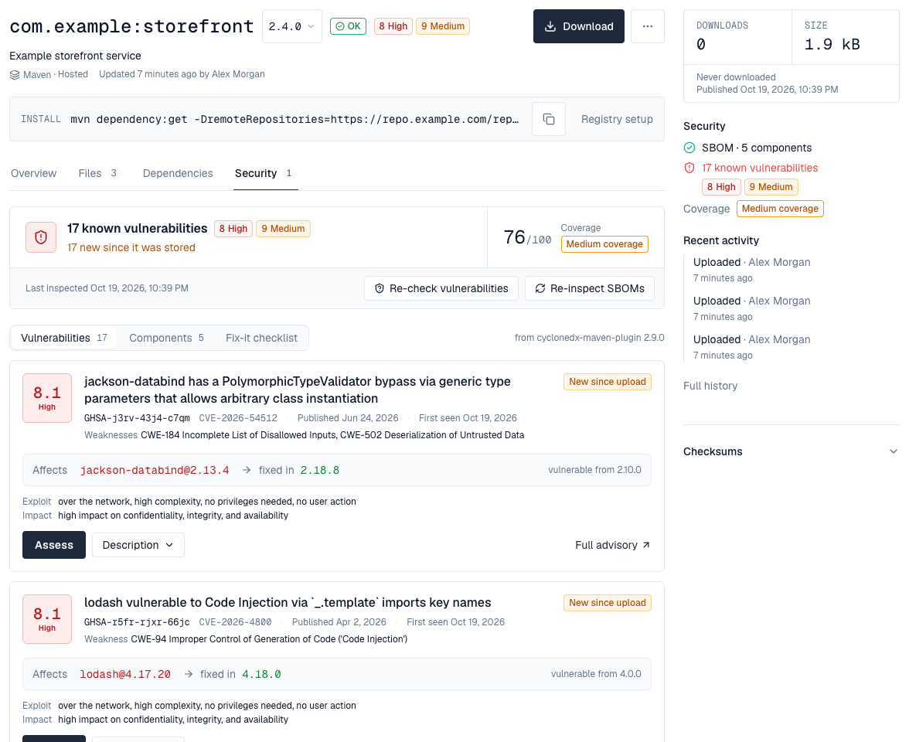
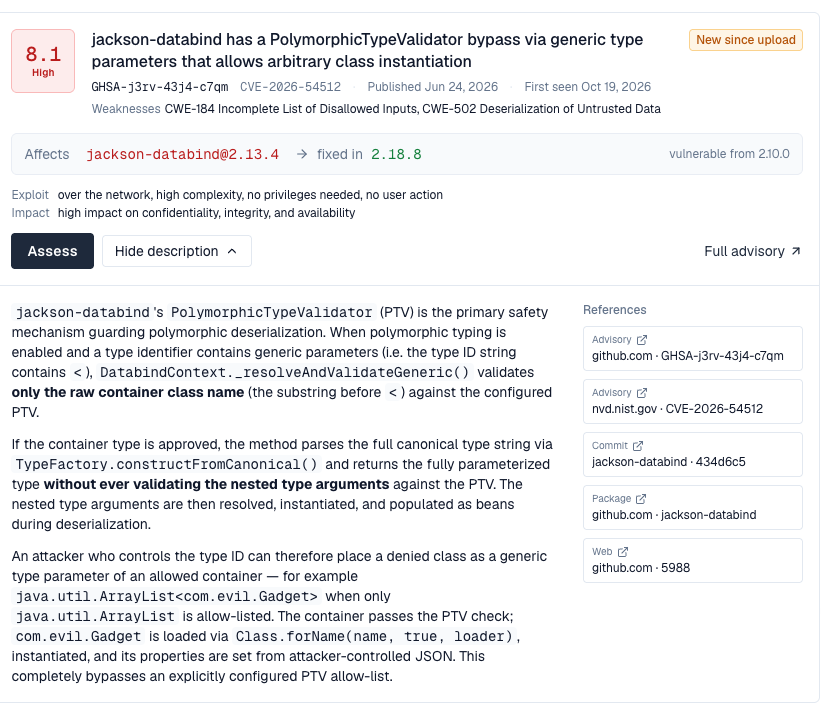
3. Coverage: how much Depotex could see
"No vulnerabilities found" only means something when Depotex could see what is inside a version. Coverage says how much it could see, so that an artifact Depotex knows little about never looks safe. It shows on the version's side panel and Security tab, on each application SBOM, and as a badge on Browse rows whose coverage is medium or low. A version with low coverage and no findings reads None found, but coverage is low. Needs Pro.
Coverage is a score from 0 to 100, added up from three things. How this is worked out on the version's Security tab shows each part for that version, with what would raise it.
| Part | Up to | What it asks | Points |
|---|---|---|---|
| Where the list came from | 40 points | Who made the list of contents? | An SBOM the build made (a file next to the package, a build attestation, an upload): 40. Made by Depotex from lockfiles: 36. From a model card: 20. From a lockfile shipped inside the package: 36. From the package's own description, because no SBOM came with it: 16 |
| How deep it goes | 35 points | Does it list what the dependencies pull in, too? | The whole dependency tree: 35. It doesn't say which entry depends on which: 21. Only the direct dependencies: 10.5 |
| Exact versions | 25 points | How many dependencies name one exact version? | The share of them, times 25. A range such as ^4.0 can't be checked: which version gets installed depends on when and where |
| Band | Score | Means |
|---|---|---|
| High | 80 and up | Depotex could see most of what is inside: findings, or their absence, can be trusted |
| Medium | 50 to 79 | Part of it could be checked, typically the direct dependencies only |
| Low | below 50 | Little could be checked; no findings doesn't mean safe |
| Not covered | – | No SBOM, an SBOM that couldn't be read, or a kind of package no vulnerability database covers (Helm charts, Terraform modules, raw files) |
Examples: a Maven library with the CycloneDX file its build made, listing the whole tree, scores 100 (high). The same library with only its POM, whose two dependencies have exact versions, scores 52 (medium): Depotex made the list from the POM and sees direct dependencies only. An npm package whose package.json names twelve dependencies as ranges and two exactly scores 30 (low). When a version has several SBOMs, the one that shows the most counts. An SBOM longer than Depotex keeps (BROWSE_GUARD_MAX_COMPONENTS) stays below high.
Operating system packages are checked against the advisories of their own distribution release (Debian 12, Ubuntu 22.04, Alpine 3.19, Red Hat Enterprise Linux 9, Rocky Linux 9, AlmaLinux 9, SUSE Linux Enterprise 15 SP6, openSUSE Leap 15.6, Azure Linux 3, Amazon Linux 2023, Fedora 43, Oracle Linux 9, …), by their source package (RPM packages by their own name and their source package's, as RPM advisories use either): the same openssl version can be fixed in one release and not another. Packages of a release no vulnerability database is asked about (CentOS Stream, CBL-Mariner), or whose SBOM doesn't say the release, are listed but not checked, and coverage counts them as such; the vulnerability report names those releases. A distribution's advisory (such as RHSA-2024:1234 or ALAS2023-2024-500) shows the CVEs it fixes. Go's standard library (stdlib, which tools such as Syft list for a Go binary at the Go release it was built with) is checked against the Go vulnerability database by that release. Packages stored in an APT or YUM repository are checked once the repository's Distribution release setting says which release they belong to.
To raise a version's coverage, publish the SBOM your build makes next to the package (for example with the CycloneDX plugin for Maven, Gradle or npm), or attach one to the image with docker buildx build --sbom=true.
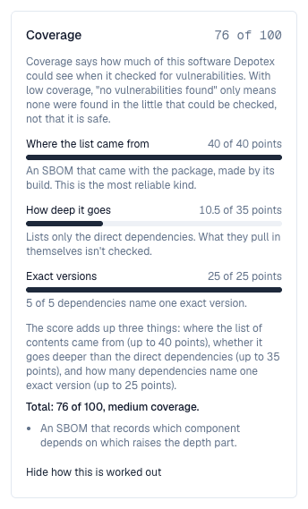
4. How complete is an SBOM?
Every SBOM shows a completeness score against the NTIA minimum elements: how many of its components carry a supplier, a name, a version and a unique identifier (a package URL or a hash), and whether the document records dependency relationships, who made it and when. The chip lists what is missing; on an application version, Why these scores opens a card per score: each element with its share and what would add it, and coverage with its three parts. It measures the document, not the software: a complete SBOM of vulnerable software scores 100.
5. Exporting and sharing
Besides the uploaded or stored file (Download), every SBOM exports from what Depotex read of it, in either format, so a CycloneDX upload can be handed on as SPDX and the other way round:
- CycloneDX 1.5 JSON, with the known vulnerabilities, their scores and the VEX statements merged in.
- SPDX 2.3 JSON, with package URLs, checksums, licenses and relationships (no vulnerabilities: SPDX 2.3 has no place for them).
- Share link: a link anyone can open until it expires (1 to 90 days, 30 by default), without an account, to hand an SBOM to a customer or an auditor. Making one needs spaces:sbom:write, raises sbom.share.create (a policy can forbid sharing or cap the days) and is in the audit log. A link can't be revoked before it expires.
Exports and share links need Pro.
| Request | Returns |
|---|---|
| GET …/sbom/{n}/export?format=cyclonedx or spdx, &vex=1 (a version); GET …/documents/{n}/export?… (an application) | The export as a file |
| POST …/sbom/{n}/share, POST …/documents/{n}/share {format, vex, expiresDays} | A link: url, expiresAt |
| GET /api/sbom/shared/{token} | The export, for anyone, until the link expires |
6. Watching for new vulnerabilities
Advisories arrive after software ships. With vulnerability data on, every re-check that finds new advisories for the components of an SBOM raises sbom.vulnerability.found (one per SBOM, worst first), and the space's owners and maintainers get one in-app alert per space for each round of checks: the version when only one is affected, otherwise how many artifact versions and applications, the worst advisory, and what policies did about them. Automation can forward the event to chat, e-mail or a ticket.
- Each advisory shows when Depotex first saw it match, and New since upload when that was after the version was stored. The Security tab sums it up: "2 new since it was stored", so a version that was clean when it was pushed is told apart from one that never was.
- The Fix-it checklist (next to Vulnerabilities and Components) is a list of steps: upgrade each affected component to the version that fixes its advisories (with the command for npm, PyPI, Composer, Cargo, Go and NuGet, ready to copy), what has no fix yet, then check again once the upgraded version is stored. Ticking a step is only for you, while the page is open. Advisories assessed as not affecting the software (VEX) are left out.
- When an advisory stops affecting an SBOM (withdrawn, corrected to no longer name the version, or assessed not_affected or fixed), sbom.vulnerability.resolved is raised, so automation can close what it opened.
- sbom.scan.complete is raised once every component of a newly stored version's SBOMs has been checked, with the counts by severity and the coverage: CI or automation can wait for it.
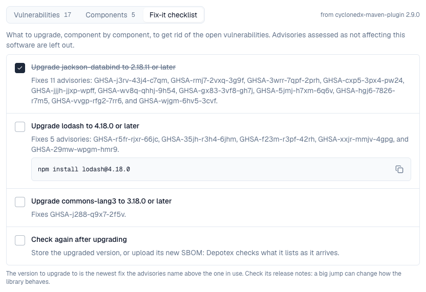
7. When a re-check breaks a policy
A single new advisory can affect every version that uses a library, sometimes thousands of them, all at once. So what a re-check does when it makes stored versions break an SBOM policy is one setting under Settings → Vulnerability data:
| Setting | What happens |
|---|---|
| Alert only (default) | The space's owners and maintainers are told which versions break which policy. The versions stay available, so builds keep working while you assess the advisory. |
| Quarantine after a grace period | Each version that breaks a policy shows Will be quarantined on … on its Security tab and side panel. On that date it is checked again: if it still breaks the policy it is quarantined (source Refused by policy); if it was fixed, or the advisory was assessed with VEX, it stays available. A grace period of 0 quarantines at once. Up to 90 days, 7 by default. |
New uploads and newly fetched versions are not affected by this setting: they are checked and, when a policy denies them, quarantined straight away. A policy can still tell re-checks apart itself: the evaluation's trigger is advisories for them.
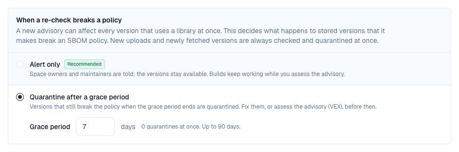
8. Policies on SBOMs
Every SBOM is evaluated by the event sbom.document.evaluate when it is read (an artifact version), when it is uploaded (an application), and again whenever new advisories match its components. The policy sees the licenses its components declare, the component counts (and whether some have no package URL or the document was cut), what is known of its vulnerabilities at that moment, with VEX assessments applied (counts by severity, the worst, the advisory ids, and findings: each open advisory with its severity, whether a fixed version exists, how many days since Depotex first saw it, and whether that was after the version was stored), how many SBOMs the version has (documents; a version with none is evaluated too, with documents 0), where the list came from (origin), and coverage: this SBOM's band and score and the version's (version_coverage, its best SBOM's). A policy that denies:
- quarantines the artifact version (source Refused by policy in the quarantine list, with the policy's message as the reason). Release it as usual; it isn't quarantined again until something changes. The upload or proxy fetch itself isn't refused, because SBOMs are read in the background a few seconds later: "blocking" a version means it can't be downloaded until someone releases it.
- refuses an application SBOM upload with the policy's message; nothing is kept.
Ready-made templates under Settings → Policies (Pro):
| Template | Does |
|---|---|
| Refuse SBOMs with severe vulnerabilities | Pick the worst severities that aren't allowed (critical, high, …). |
| Refuse components under some licenses | List license identifiers (GPL-3.0-only, AGPL-3.0-only, …) no component may carry. |
| Require complete SBOMs with package URLs | Refuse SBOMs with components that can't be checked (no package URL) or that were cut at the component limit. |
| Refuse SBOMs with fixable severe vulnerabilities | Pick severities; only vulnerabilities that already have a fixed version count, so nobody is stopped by what they can't change yet. |
| Require an SBOM | Quarantine artifact versions that have no SBOM at all, published or made by Depotex. Add a condition on the repository to leave proxies alone. |
| Refuse SBOMs with low coverage | Pick the coverage bands that aren't allowed (low, medium). A version counts with its best SBOM, so a thin SBOM Depotex made beside a full one from the build doesn't count against it. |
Vulnerabilities are checked a few minutes after an SBOM arrives, so a severity policy mostly acts on the re-evaluation that follows the check, not at upload time. A denied artifact version is quarantined, never deleted.
9. Assessing a vulnerability (VEX)
Not every reported vulnerability matters: the vulnerable code may not be reachable, the configuration never used, a mitigation in place. A VEX statement records that for one advisory in one SBOM, for the people who read it and for the exported document. Space developers and up (spaces:sbom:write) make them from Assess on a vulnerability, in a version's Security tab or an application's SBOM. Needs Enterprise.
| State | Meaning | Counted? |
|---|---|---|
| Under investigation | Someone is looking at it | yes |
| Affected | It applies; a response says what happens next (update, workaround, won't fix…) | yes |
| Not affected | It doesn't apply, with a justification: vulnerable code not present or not reachable, requires a configuration, dependency or environment not used, protected by the compiler, at runtime, at the perimeter or by a mitigating control | no |
| Fixed | Already fixed in this software | no |
- A vulnerability assessed not affected or fixed leaves the counts: the version's badge and side panel, the Browse filter and the application's report say what still applies, and show how many were assessed away.
- An uploaded CycloneDX document that carries its own analysis (vulnerabilities[].analysis) brings those statements along, marked as the document's own; a person's statement replaces them.
- Export VEX on the vulnerabilities panel downloads the statements as a CycloneDX VEX document (with the advisories' ratings and the affected components) or as CSAF 2.0 VEX, to hand to customers or auditors.
- Each statement names who made it and when; making, changing and removing one is in the audit log and raises sbom.vex.update / sbom.vex.delete, so a policy can require a justification or a detail.
A statement covers one SBOM. The same advisory in another version, or in an application's next release, is assessed again.
| Request | Returns |
|---|---|
| PUT …/sbom/{n}/vex/{advisory} (a version), PUT …/documents/{n}/vex/{advisory} (an application) {state, justification, response, detail} | Makes or changes the statement |
| DELETE …/vex/{advisory} | Removes it |
| GET …/sbom/{n}/vex?format=cyclonedx or csaf, GET …/documents/{n}/vex?format= | The export as a file |
10. Models and datasets (AI BOM)
A Hugging Face model or dataset gets an SBOM of its own, read from its model card: the repository itself as a machine-learning model (or data), its base models and the datasets it was trained on as components, with the card's license. It behaves like any SBOM here: components and completeness in the browser, licence policies, and Components search across everything, so "which models were fine-tuned from Llama-3-8B?" is one search. Models and datasets carry Hub package URLs (pkg:huggingface/…), which vulnerability databases don't cover: they are listed, not matched.
11. AI agents
AI agents connected through the MCP plugin read the same store, as the person who signed in: get_sbom lists a version's SBOMs and their components, get_vulnerabilities what is known about them with the assessments, search_components finds a component across every SBOM the person can see, get_advisory what a CVE affects. Pro features (search, advisories) and spaces the person can't open are refused to the agent as they would be in the browser.
12. Finding a component everywhere
Browse → Components searches every SBOM you can see at once, stored with artifacts or uploaded for applications: type part of a name (log4j) or a package URL (pkg:maven/org.apache.logging.log4j/log4j-core@2.14.1; without a version, every version of the package), and narrow to an ecosystem. Each result is one component version with how many SBOMs list it, how many of those belong to artifacts and to applications, and the worst vulnerability it matches; Show where opens the list, linking to each artifact version or application version. An advisory's id, wherever it appears, opens its page: the weakness and the CVSS vector in plain words, its references, the affected versions of every release line (the lines in what you can see are marked), its description, and everything you can see that it affects with the version that fixes each one's line. Needs Pro.
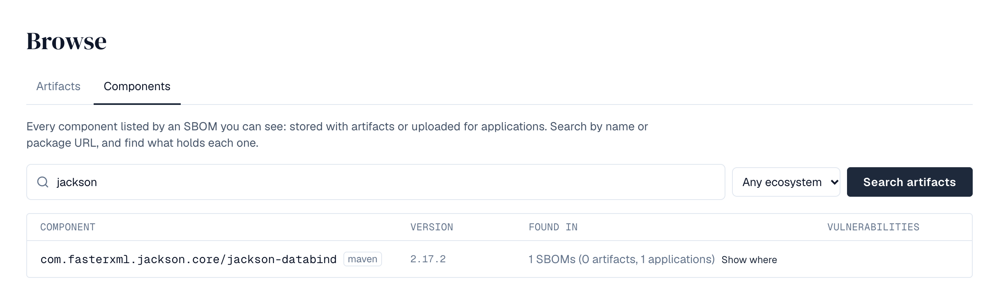
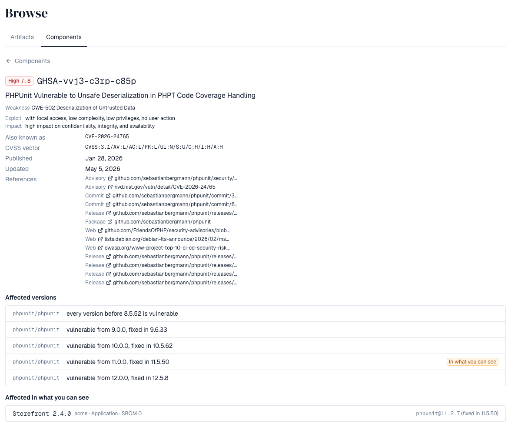
The search covers repositories you can browse whole and spaces you can read. Access limited to part of a repository (a content selector) doesn't bring its SBOMs into the search. Version ranges ("below 2.17") aren't supported yet: search by name and read the versions.
| Request | Returns |
|---|---|
| GET /api/browse/components?q=&purl=&ecosystem= | Components across every SBOM you can see, with counts and the worst severity; q of at least two characters, or a package URL |
| GET /api/browse/components/holders?ecosystem=&namespace=&name=&version= | What holds one component: artifact versions (with their browser address) and application versions |
| GET /api/browse/advisories/{id} | An advisory (with its whole details, cwes and ranges: each release line's affected versions) and everything you can see that it affects, each with the fix of its own line |
13. Applications
An application belongs to a space and has a key (shop, billing-api), a name and a description. Its versions appear as SBOMs are uploaded for them: there's nothing to create first. A version can hold more than one document (one for the service, one for its base image) and can be linked to the artifact versions it was built from, so the connection between what was published and what was deployed is recorded. Everything is in the space's SBOMs tab: the applications with search, each one's versions with an upload form and the CI command, and each version's SBOMs with their components, vulnerabilities and downloads, plus the linked artifact versions.
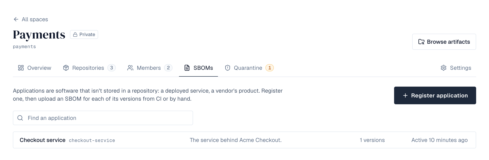
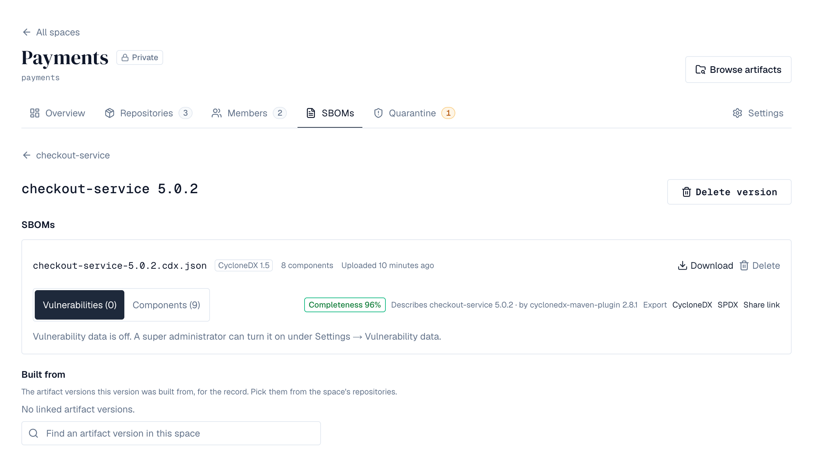
| Who | Needs | Can |
|---|---|---|
| Space viewers | spaces:read | See applications, their versions, documents and components; download the documents |
| Space developers and up | spaces:sbom:write | Register, rename and delete applications; upload and delete SBOMs; set links |
Without an Enterprise license what exists stays readable, but nothing can be registered or uploaded (402 license_required).
14. Uploading from CI
Upload the SBOM a build tool produced as the request body, with an API token that carries spaces:sbom:write. The version is created when it doesn't exist; a second upload to the same version adds another document.
# syft, trivy, cdxgen, cyclonedx-maven-plugin, … produce the file
syft packages dir:. -o cyclonedx-json > sbom.cdx.json
curl -f -X POST -H "Authorization: Bearer $DEPOTEX_TOKEN" \
--data-binary @sbom.cdx.json \
"https://depotex.example.com/api/spaces/platform/sbom/applications/shop/versions/3.1.0/documents?name=sbom.cdx.json"The answer describes the stored document: its format, the tool that made it, how many components it lists and the software it describes (CycloneDX metadata.component, SPDX DESCRIBES). Documents over BROWSE_GUARD_MAX_COMPONENTS components (50,000) are kept up to the limit and marked truncated.
| Refusal | Meaning |
|---|---|
| 422 sbom_refused | Not an SPDX or CycloneDX document, or over a limit; details.reason says which (malformed, too_large, too_deep, too_many_elements, entity_declared, timeout) |
| 400 sbom_too_large | Larger than BROWSE_GUARD_MAX_SBOM (32 MB) |
| 400 invalid_version | A version is 1-200 letters, digits, dots, dashes, pluses, tildes or underscores |
| 409 key_taken | An application with that key exists in the space |
15. SBOMs inside packages
Some packages carry their own SBOM inside the package file, and Depotex reads it like one published beside the package: Python wheels in .dist-info/sboms/ (PEP 770), NuGet packages in _manifest/spdx_2.2/ (Microsoft's SBOM tool), and Java archives (.jar, .war, .ear) in META-INF/sbom/ (Spring Boot and the CycloneDX Maven plugin). On the Security tab such an SBOM shows the file it came from under Inside the package; use Export to download it. Packages up to 128 MB are read; packages stored before this was added are read again automatically.
16. Checking and reading again
SBOMs are made when a version is stored and checked for vulnerabilities on a schedule. To have it done now:
| Where | What it does | Who |
|---|---|---|
| A version's Security tab: Re-check vulnerabilities | Its SBOMs' components are checked again within a few minutes, against the vulnerability data and by every scanner plugin. | Repository administrators and people who can write SBOM statements in the space |
| A version's Security tab: Re-inspect SBOMs | The version is read again, ahead of anything else waiting: its SBOMs, coverage and the SBOMs Depotex makes are rebuilt. The tab shows when it was queued and when it was done. | Same |
| A repository's Settings: Re-inspect all versions | Every version of the repository is read again, with progress. For Docker repositories, Also scan container images again runs the image scanner again instead of reusing earlier scans (Pro). At most every 10 minutes. | Repository administrators |
| Settings → Vulnerability data: Re-inspect every version | Every stored version, in every repository, is read again in the background, with progress; images can be scanned again too (Pro). At most once an hour. | Administrators who manage every repository |
| Settings → Vulnerability data: Re-scan now | Every component is checked again (no reading). | Super admins |
Every request raises sbom.rescan.request with its scope (version, repository, installation) and mode, so policies can refuse it, and is recorded in the audit log.
Both installation-wide actions are in the Status block at the top of Settings → Vulnerability data, under whether checks are on, the source in use, the last check, and how many components were checked, still wait, advisories are known and matches were found. While versions are read again, a bar shows how many are left.
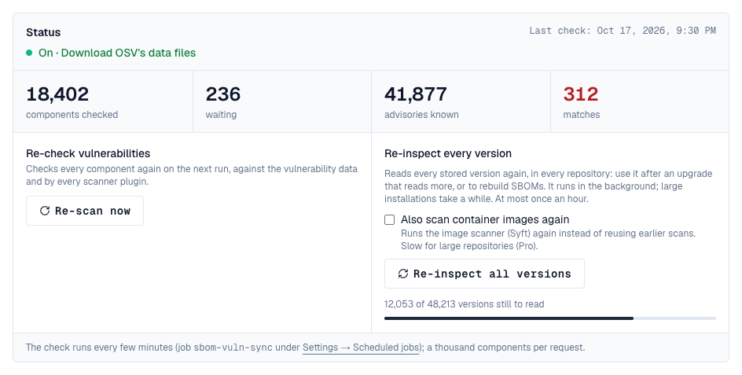
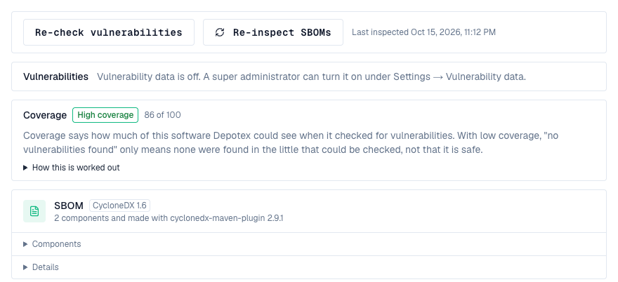
17. Vulnerability data
With vulnerability data on, every component that has a package URL is checked against known vulnerabilities, and each SBOM reports what its components carry: the advisories, their severity and score, the weaknesses they name (CWE ids with MITRE's names, built in, so offline installations have them too), and the version that fixes each one on the component's release line. The check uses the OSV service (osv.dev), which covers npm, PyPI, Maven, Go, crates.io, NuGet, Packagist, RubyGems, Hex, Pub, Linux distributions and GitHub's advisories. Needs Pro.
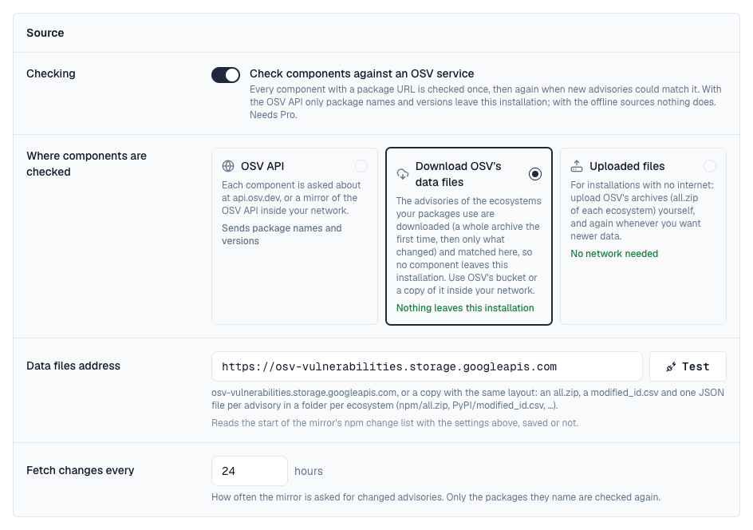
- Turn it on under Settings → Vulnerability data (super admins). Only package names and versions are sent; nothing about your repositories, users or files. Without a Pro license it can still be turned off.
- Each distinct package version is asked about once, then again after the re-check interval (24 hours by default), so new advisories are found for what you already have. The check runs every few minutes as the job sbom-vuln-sync; Test on the settings page asks the endpoint about a known vulnerable package.
- With the OSV API source and a network that can't reach osv.dev, point the endpoint at a mirror of the OSV API inside your network.
- Severity is the CVSS v3 base score when the advisory has a v3 vector (critical from 9.0, high from 7.0, medium from 4.0), otherwise the advisory database's own rating.
- Unknown is unknown: a component without a package URL, or one not checked yet, is reported as such, never as clean. Each report says how many components were checked and how many still wait. Until something is found, the Vulnerabilities view says why the list is empty: checks need a Pro licence, are switched off, or are paused in the scheduler; components are waiting for the next check (with its time; the page updates by itself); or everything was checked and nothing is known.
- If the endpoint can't be reached, what was found stays as it was; the settings page shows the error.
18. Scanner plugins
Plugins can check components too, for example against a commercial vulnerability database. Each active scanner plugin is asked about every component on the same schedule, and what it finds is shown with the rest. Needs Pro.
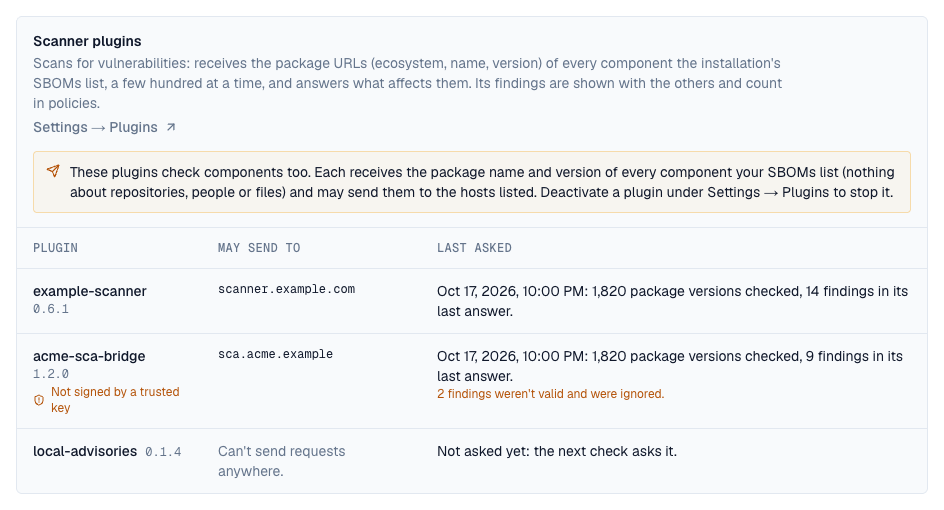
- What leaves the installation: each scanner receives the package name and version of every component your SBOMs list, and may send them to the hosts its manifest lists. Settings → Vulnerability data → Scanner plugins shows each one with those hosts; deactivate a plugin to stop it.
- One finding, several sources: a finding that shares an id or alias with advisories already reported for that package (a CVE and its GitHub advisories), or names a CVE a distribution's advisory for that package fixes, is merged into them, not shown twice. Each finding says who reported it (Found by) when a scanner did.
- Policies count scanners' findings like any other: severity, fix available, first seen. The findings policies see also list their sources (providers: osv, plugin:<name>).
- Re-scan now in the settings page's Status block checks every component again within a few minutes, against the vulnerability data and by every scanner (event sbom.rescan.request, which policies can refuse).
- A scanner that fails keeps its earlier findings and shows the error on the settings page; a deactivated or removed scanner's findings go, and are reported as resolved.
19. Amazon Linux, Fedora and Oracle Linux
OSV doesn't cover these distributions, so their security advisories are read from their own package repositories (the updateinfo dnf reads: Amazon Linux's ALAS, Fedora's security updates, Oracle Linux's ELSA) for each release your packages use, and their packages are checked here, whichever source is chosen above. The releases read show under Settings → Vulnerability data → Distribution advisories, with how many advisories each had. They are read again every Re-check every interval, only when the repository changed.
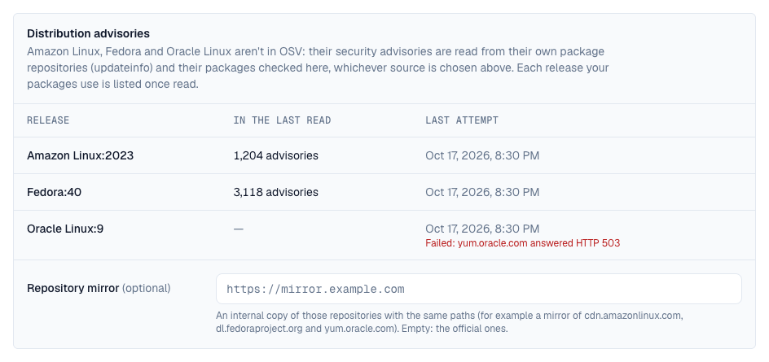
- Read from cdn.amazonlinux.com, dl.fedoraproject.org and yum.oracle.com. Without internet access, set Repository mirror to an internal copy of those repositories that keeps their paths.
- Severity is the distribution's own rating (Important counts as high), and each advisory lists the CVEs it fixes.
- For Fedora, the updates repository of the release is read; Fedora releases are supported for about 13 months.
20. Checking without the internet
Under Where components are checked, two more sources keep every check inside the installation: nothing about your packages is sent anywhere. They give the same findings as the OSV API.
| Source | How it works |
|---|---|
| OSV API | Each package version is asked about at osv.dev (or a mirror of its API). The default. |
| Download OSV's data files | The advisories of the ecosystems your packages use are downloaded from OSV's public bucket (osv-vulnerabilities.storage.googleapis.com) or a copy of it inside your network, and matched here. The first time each ecosystem is downloaded whole (for Linux distributions, only the releases in use); after that, every Fetch changes every interval, only the advisories that changed, and only the packages they name are checked again. Each ecosystem's state shows under Offline data. |
| Uploaded files | For installations with no connection at all. Download an ecosystem's all.zip elsewhere (for example osv-vulnerabilities.storage.googleapis.com/npm/all.zip, PyPI/all.zip, Debian/all.zip) and upload it under Offline data → Upload OSV data; upload newer files whenever you want newer data. The next check imports it and deletes the file; the packages it names are checked again. |
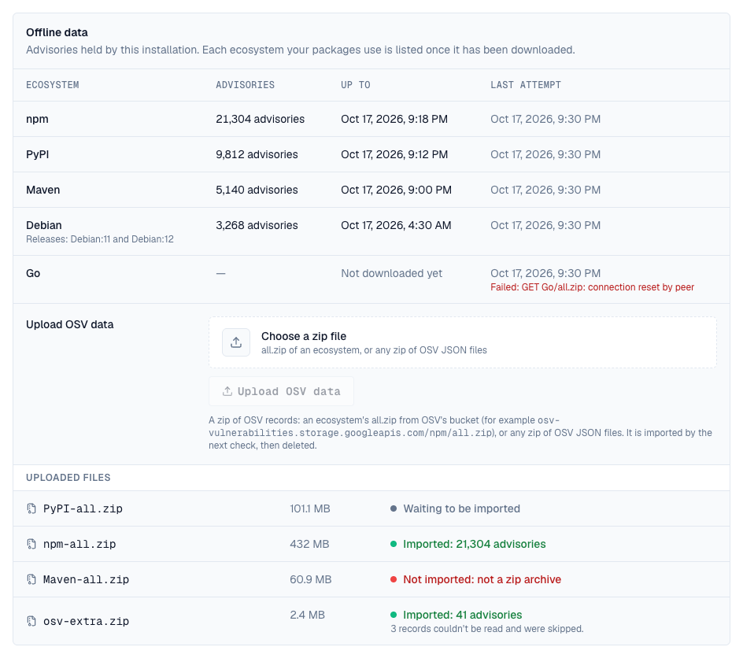
- Changing the source checks every component again.
- Versions are compared by each ecosystem's own rules (semantic versions, Python, Maven, NuGet, Debian and RPM versions with epochs, Alpine and others), and the fixing version shown is the one that ends the range your version is in.
- A file can be up to 2 GiB (VULN_ARCHIVE_MAX_BYTES). The largest OSV archives are npm (about 220 MB) and Ubuntu (about 800 MB for all releases; a single release is about 150 MB).
- Uploaded files are used only by the two offline sources: choose one and save before uploading.
- An uploaded file only adds and updates advisories; to drop advisories OSV has withdrawn, upload the ecosystem's whole archive again (withdrawn advisories are recognised and ignored).
| Request | Returns |
|---|---|
| GET /api/browse/versions/{id}/sbom/{n}/vulnerabilities | What matched an SBOM stored with a version: a summary per severity and each advisory (id, aliases, summary, severity, score, references, cwes with their names, the start of its details) with the components it hits, each with the fixing version of its line and the range holding it (introduced, fixed or lastAffected) |
| GET …/applications/{app}/versions/{version}/documents/{n}/vulnerabilities | The same for an application's SBOM |
| GET, PUT /api/sbom/vulnerability-data | The settings (enabled, source: api, mirror or upload, endpoint, mirrorUrl, recheckHours, rescanAction: alert or quarantine, graceDays: 0 to 90) and status (last check, errors, counts, each downloaded ecosystem, the last uploaded files); vulnerability_data:manage |
| POST /api/sbom/vulnerability-data/test | Checks that the endpoint answers like OSV, or that the data files address serves OSV's files |
| POST /api/sbom/vulnerability-data/rescan | Every component checked again on the next run, by the vulnerability data and every scanner plugin. Pro; vulnerability_data_off while checks are off |
| POST /api/sbom/vulnerability-data/bundles/{name} | Uploads a zip of OSV records (the request body); answers 202 and the file waits for the next check. Pro; refused with offline_source_required while the source is the OSV API |
21. Events
Registering and deleting an application and uploading and deleting a document raise sbom.application.create, sbom.application.delete, sbom.document.upload and sbom.document.delete (before and after). Policies can refuse them: for example only CycloneDX, or no document listing fewer than ten components. The upload event carries the format, the tool, the component count and whether the document was truncated. Changing the vulnerability data settings raises sbom.vulnerability_data.update, each import of offline data sbom.vulnerability_data.import, and Re-scan now and every re-check or re-inspection sbom.rescan.request; VEX statements raise sbom.vex.update and sbom.vex.delete; every SBOM is evaluated by sbom.document.evaluate, new advisories raise sbom.vulnerability.found, and a share link raises sbom.share.create. See Events.
22. API
Applications live under the space; SBOMs of artifact versions under the browser's version. Lists use cursor paging (cursor, limit).
| Request | Returns |
|---|---|
| GET /api/spaces/{space}/sbom/applications?q= | The space's applications by key, with version counts; licensed |
| POST /api/spaces/{space}/sbom/applications {key, name, description} | Registers an application (201) |
| GET, PUT, DELETE …/applications/{app} | One application; rename; delete with everything in it |
| GET …/applications/{app}/versions | Its versions, newest first, with document and component counts |
| GET …/versions/{version} | A version with its documents and links |
| DELETE …/versions/{version} | Removes the version and its documents |
| PUT …/versions/{version}/links {versionIds: []} | Replaces the linked artifact versions (ids from the browser, in the space) |
| POST …/versions/{version}/documents?name= (body: the SBOM) | Stores a document (201); X-File-Name names it too |
| GET …/documents/{n} | The document and the relationships between its components (at most 5,000) |
| GET …/documents/{n}/components?q= | Its components (purl, name, version, type, supplier, licenses, hashes), paged; q matches name or purl |
| GET …/documents/{n}/download | The file as uploaded |
| DELETE …/documents/{n} | Removes the document |
| GET /api/browse/versions/{id}/sbom/{n}, …/components | The same for an SBOM stored with an artifact version (n from /attachments) |
Deleting a space removes its applications and their files.